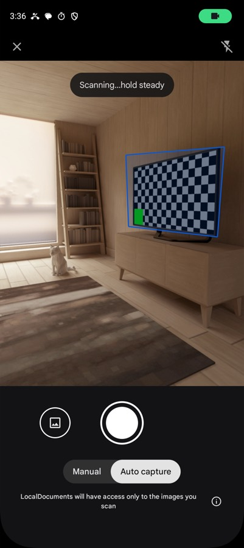
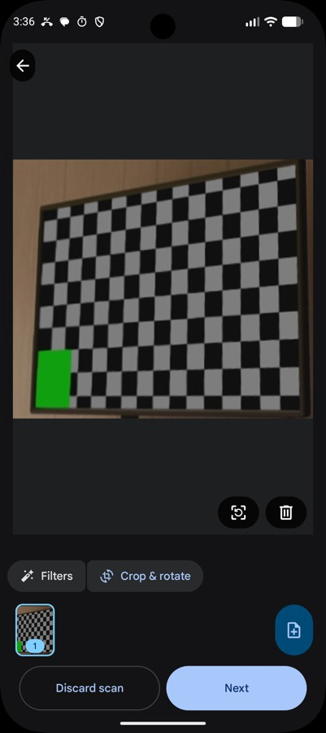

LocalDocuments: a scanner app that never asks for your camera
Scanner apps are a notorious category — free, ad-stuffed, and quietly holding the camera permission plus your documents. This one holds neither.

Document scanner apps are one of the worst neighbourhoods on the Play Store. The category is full of free apps stacked with ads, watermarks on the free tier, subscriptions to remove them, and a permission list that includes the camera, storage, and often a good deal more. You're scanning your passport, your tenancy agreement, your medical forms — and handing an unknown developer camera access to do it.
LocalDocuments came out of a specific realisation: you don't need the camera permission to build a scanner.
How that works. The ML Kit Document Scanner API doesn't give you a camera feed to draw. It hands the whole capture flow to Google Play Services, which runs the camera in its own process, does the edge detection and cleanup there, and returns finished images to your app. The camera is never opened by your code, so your app never needs the permission. You get the scans; you never get the camera.
That's an unusually clean privacy property. It isn't a promise in a policy document — the app genuinely cannot look through the lens, because the API is structured so it never has to.
What it does
Point it at a document. It detects the edges automatically, captures when the framing is right, corrects the perspective and rotation, and lets you clean the result up — filters, shadow removal, and ML Kit's rather good "erase stains and fingers" pass that takes out the thumb holding the page down.


Multi-page scanning with a configurable page limit, import from the gallery for photos you already took, and export to JPEG or a multi-page PDF. No watermark, no page cap, no subscription.
The stack
| Concern | Choice |
|---|---|
| Scanning | ML Kit Document Scanner API 16.0.0-beta1 |
| Language | Kotlin 2.0.21 |
| UI | Jetpack Compose, Material 3 |
| Images | Coil 2.7.0 |
| Architecture | Single activity, ViewModel + StateFlow |
| Build | Gradle 8.12, AGP 8.7.3 |
| Minimum | Android 8.0 (API 26), targets 35 |
The app itself is small, and that's the point. Almost all the difficult work — the edge detection, the perspective correction, the shadow and blemish removal — happens inside Play Services. My code launches the scanner, receives the results, and handles the library and export.
Writing less code was the correct engineering decision here. A hand-rolled scanner would mean CameraX, my own edge detection, my own perspective transform, and a permission I didn't want — to end up worse than the thing already on the device.
The trade-offs, plainly
It requires Google Play Services. This is the real cost. No Play Services — a de-Googled ROM, some devices outside the Play ecosystem — and the app cannot work at all, because the entire scanning capability lives there. For a project whose pitch is user autonomy, depending on a Google component is a genuine tension and I'm not going to paper over it.
Models download on demand. Play Services pulls the scanner models and caches them locally, so the very first scan may need a connection even though every scan after it doesn't.
It needs about 1.7 GB of RAM. That rules out the low end.
The API is still beta. 16.0.0-beta1 means the surface can change.
What I'd say in its defence: the alternative isn't a perfect independent scanner, it's one of the ad-supported apps that wants the camera and uploads your documents. Against that, a thin wrapper over a component already on the device — one that keeps images local and needs no permissions — is a straightforwardly better deal.
The general lesson
The thing I took from this project is that permissions are often a design choice, not a requirement. It's easy to reach for CAMERA because scanning obviously involves a camera. But the platform offered a route where the capture happens somewhere else and I only receive the result — and that route removed the permission entirely.
Worth asking on any feature that seems to demand a scary permission: is there a system component that will do the sensitive part for me and hand back only what I actually need?
← All posts